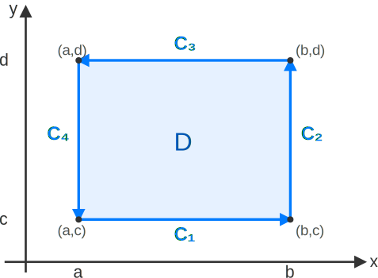

Pouso Lunar e Missões Apollo (1969-1970)
Após o pouso da Apollo 11 em 1969, missões subsequentes como Apollo 12 e 13 continuaram a exploração lunar. Esses empreendimentos exigiam uma matemática robusta para navegação, cálculo de trajetórias e análise de campos de força em ambientes complexos e com recursos computacionais limitados.
Computação Eficiente para Missões Críticas
O Apollo Guidance Computer (AGC), embora revolucionário, possuía capacidade de processamento e memória modestas para os padrões atuais. Teoremas como o de Green permitiam transformar integrais de linha, que poderiam ser computacionalmente intensivas ao longo de trajetórias complexas, em integrais de área, muitas vezes mais simples de avaliar ou aproximar, otimizando os cálculos cruciais para o sucesso da missão.
Seja \(D\) uma região plana limitada por uma curva simples, fechada, suave por partes e orientada positivamente \(C\). Se \(P(x,y)\) e \(Q(x,y)\) têm derivadas parciais contínuas em uma região aberta contendo \(D\), então:
\[ \oint_C (P\,dx + Q\,dy) = \iint_D \left(\frac{\partial Q}{\partial x} - \frac{\partial P}{\partial y}\right)\,dA \]Este teorema estabelece uma relação fundamental entre uma integral de linha ao longo da fronteira \(C\) de uma região \(D\) e uma integral dupla sobre a própria região \(D\).
Interpretação Geométrica:
O teorema relaciona a "circulação" ou "fluxo tangencial" ao longo da fronteira de uma região com a "densidade de rotação" (rotacional) dentro da região.
Interpretação Física (para um campo vetorial \(\vec{F} = (P,Q)\)):
Explore a relação entre a integral de linha e a integral de área para um campo vetorial \(\vec{F}(x,y) = (-ay, bx)\).
Desafio do Apollo Guidance Computer (AGC)
Com os recursos computacionais limitados do AGC, transformar integrais de linha ao longo de trajetórias potencialmente complexas em integrais de área sobre regiões mais simples (ou sobre aproximações dessas regiões) era uma técnica valiosa. Isso permitia estimar, por exemplo, o trabalho total realizado por um campo ou o fluxo total de alguma quantidade, analisando o comportamento agregado do campo dentro de uma região delimitada, em vez de seguir ponto a ponto uma trajetória complicada.
O Teorema de Green pode ser habilmente usado para calcular a área \(A\) de uma região \(D\), escolhendo \(P\) e \(Q\) apropriadamente para que \( \frac{\partial Q}{\partial x} - \frac{\partial P}{\partial y} = 1 \). Algumas escolhas comuns são:
Problema: Calcule a área da região \(D\) limitada pela elipse \( \frac{x^2}{a^2} + \frac{y^2}{b^2} = 1 \) usando o Teorema de Green.
Dica: Utilize a parametrização da elipse \(x(t) = a\cos t\), \(y(t) = b\sin t\) para \(0 \le t \le 2\pi\). Escolha uma das fórmulas de área, por exemplo, \(A = \oint_C x\,dy\).
Usamos \(A = \oint_C x\,dy\). Com \(x(t) = a\cos t\) e \(y(t) = b\sin t\), temos \(dy = b\cos t \,dt\).
\[ A = \int_0^{2\pi} (a\cos t)(b\cos t \,dt) = ab \int_0^{2\pi} \cos^2 t \,dt \]Sabendo que \(\cos^2 t = \frac{1 + \cos(2t)}{2}\):
\[ A = ab \int_0^{2\pi} \frac{1 + \cos(2t)}{2} \,dt = ab \left[ \frac{t}{2} + \frac{\sin(2t)}{4} \right]_0^{2\pi} \] \[ A = ab \left( \left( \frac{2\pi}{2} + \frac{\sin(4\pi)}{4} \right) - \left( 0 + \frac{\sin(0)}{4} \right) \right) = ab (\pi + 0 - 0) = \pi ab \]Portanto, a área da elipse é \(\pi ab\).
O Teorema de Green fornece uma ponte elegante entre o comportamento de um campo vetorial em uma fronteira (macro) e suas propriedades internas (microscópicas agregadas).
Sua versatilidade permite o cálculo de trabalho, fluxo (em uma forma específica), e notavelmente, áreas de regiões planas, simplificando problemas que de outra forma exigiriam integrações mais complexas.
Para entender a origem do Teorema de Green, é instrutivo demonstrá-lo primeiro para uma região retangular simples \(D = [a,b] \times [c,d]\).
A fronteira \(\partial D\) é composta por quatro segmentos de reta \(C_1, C_2, C_3, C_4\), orientados positivamente (anti-horário).
Consideremos o termo \( \iint_D -\frac{\partial P}{\partial y} \,dA \):
\[ \iint_D -\frac{\partial P}{\partial y} \,dA = \int_a^b \left[ \int_c^d -\frac{\partial P}{\partial y} \,dy \right] dx \]Pelo Teorema Fundamental do Cálculo (em \(y\)):
\[ = \int_a^b [-P(x,y)]_{y=c}^{y=d} \,dx = \int_a^b [P(x,c) - P(x,d)] \,dx \] \[ = \int_a^b P(x,c)\,dx - \int_a^b P(x,d)\,dx = \int_a^b P(x,c)\,dx + \int_b^a P(x,d)\,dx \]Observamos que \(\int_a^b P(x,c)\,dx = \int_{C_1} P\,dx\) (em \(C_1\), \(y=c, dy=0\)).
E \(\int_b^a P(x,d)\,dx = \int_{C_3} P\,dx\) (em \(C_3\), \(y=d, dy=0\), \(x\) de \(b\) para \(a\)).
Assim, \( \iint_D -\frac{\partial P}{\partial y} \,dA = \int_{C_1} P\,dx + \int_{C_3} P\,dx \).
Agora, consideremos o termo \( \iint_D \frac{\partial Q}{\partial x} \,dA \):
\[ \iint_D \frac{\partial Q}{\partial x} \,dA = \int_c^d \left[ \int_a^b \frac{\partial Q}{\partial x} \,dx \right] dy \]Pelo Teorema Fundamental do Cálculo (em \(x\)):
\[ = \int_c^d [Q(x,y)]_{x=a}^{x=b} \,dy = \int_c^d [Q(b,y) - Q(a,y)] \,dy \] \[ = \int_c^d Q(b,y)\,dy - \int_c^d Q(a,y)\,dy = \int_c^d Q(b,y)\,dy + \int_d^c Q(a,y)\,dy \]Observamos que \(\int_c^d Q(b,y)\,dy = \int_{C_2} Q\,dy\) (em \(C_2\), \(x=b, dx=0\)).
E \(\int_d^c Q(a,y)\,dy = \int_{C_4} Q\,dy\) (em \(C_4\), \(x=a, dx=0\), \(y\) de \(d\) para \(c\)).
Assim, \( \iint_D \frac{\partial Q}{\partial x} \,dA = \int_{C_2} Q\,dy + \int_{C_4} Q\,dy \).
Somando os resultados das Partes 1 e 2:
\[ \iint_D \left(\frac{\partial Q}{\partial x} - \frac{\partial P}{\partial y}\right)\,dA = \left( \int_{C_2} Q\,dy + \int_{C_4} Q\,dy \right) + \left( \int_{C_1} P\,dx + \int_{C_3} P\,dx \right) \]Como \(\int_{C_i} Q\,dy = 0\) para \(C_1, C_3\) (pois \(dy=0\)) e \(\int_{C_i} P\,dx = 0\) para \(C_2, C_4\) (pois \(dx=0\)), podemos reescrever a soma como:
\[ = \int_{C_1} (Pdx+Qdy) + \int_{C_2} (Pdx+Qdy) + \int_{C_3} (Pdx+Qdy) + \int_{C_4} (Pdx+Qdy) \] \[ = \oint_C (P\,dx + Q\,dy) \]Isso completa a demonstração do Teorema de Green para um retângulo.
Grade de Cálculo e Discretização
Mesmo para formas geométricas complexas encontradas em problemas de engenharia aeroespacial, uma estratégia comum na era pré-computadores poderosos (e ainda hoje) é a discretização: aproximar a região por uma grade de pequenos retângulos (ou outras formas simples). O Teorema de Green, demonstrado em retângulos, fundamenta a ideia de que ao somar as contribuições de retângulos adjacentes, as integrais de linha nas bordas internas se cancelam devido à orientação oposta, restando apenas a contribuição da fronteira externa da região total. Esta propriedade de cancelamento é crucial em métodos numéricos como os de elementos finitos ou volumes finitos.
Problema: Uma sonda mapeia um campo vetorial \(\vec{F}(x,y) = (y^2, x^3 - 2xy)\) na região retangular \(D = [1,4] \times [2,5]\). Verifique o Teorema de Green calculando \(\oint_C \vec{F} \cdot d\vec{r}\) e \(\iint_D \left(\frac{\partial Q}{\partial x} - \frac{\partial P}{\partial y}\right)\,dA\) separadamente.
Aqui, \(P(x,y) = y^2\) e \(Q(x,y) = x^3 - 2xy\).
Calculamos \( \frac{\partial Q}{\partial x} - \frac{\partial P}{\partial y} \):
\(P = y^2 \Rightarrow \frac{\partial P}{\partial y} = 2y\)
\(Q = x^3 - 2xy \Rightarrow \frac{\partial Q}{\partial x} = 3x^2 - 2y\)
\(\frac{\partial Q}{\partial x} - \frac{\partial P}{\partial y} = (3x^2 - 2y) - (2y) = 3x^2 - 4y\)
Agora, a integral dupla sobre \(D = [1,4] \times [2,5]\):
\[ \iint_D (3x^2 - 4y) \,dA = \int_1^4 \int_2^5 (3x^2 - 4y) \,dy\,dx \] \[ = \int_1^4 \left[ 3x^2y - 2y^2 \right]_{y=2}^{y=5} \,dx = \int_1^4 ((15x^2 - 50) - (6x^2 - 8)) \,dx \] \[ = \int_1^4 (9x^2 - 42) \,dx = \left[ 3x^3 - 42x \right]_1^4 \] \[ = (3(4)^3 - 42(4)) - (3(1)^3 - 42(1)) = (192 - 168) - (3 - 42) = 24 - (-39) = 63 \]A fronteira \(C\) é composta por 4 segmentos:
Somando: \(\oint_C \vec{F} \cdot d\vec{r} = 12 + 108 - 75 + 18 = 63\).
Ambos os lados resultam em 63, verificando o teorema.
A demonstração do Teorema de Green para retângulos é um passo fundamental. Ela não apenas valida o teorema para uma forma básica, mas também elucida o mecanismo de como as derivadas parciais internas se relacionam com o comportamento do campo na fronteira.
Este caso serve como alicerce para generalizar o teorema para regiões mais complexas, que podem ser aproximadas por uma coleção de retângulos.
O Teorema de Green se estende para regiões \(D\) mais gerais, contanto que sua fronteira \(C\) seja C¹ por partes (ou seccionalmente suave). Isso significa que \(C\) é formada por um número finito de curvas suaves (C¹), conectadas em "quinas". A orientação de \(C\) deve ser positiva (anti-horária), mantendo a região \(D\) à esquerda.
A ideia da generalização envolve aproximar a região \(D\) por uma união de muitos retângulos pequenos (ou outras formas para as quais o teorema já é conhecido). As integrais de linha ao longo das bordas internas desses retângulos se cancelam aos pares devido às orientações opostas, restando apenas a integral de linha ao longo da fronteira externa aproximada de \(D\).
Campo Irrotacional: \(\vec{F}(x,y) = (y^2, x^2)\). Rotacional: \(2x-2y\).
Campo Rotacional: \(\vec{G}(x,y) = (-y, x)\). Rotacional: \(2\).
Reentrada Atmosférica e Campos Planetários
As trajetórias de reentrada de cápsulas espaciais, como as do programa Apollo, não eram simples formas geométricas. Para calcular o arrasto atmosférico ou analisar campos térmicos, os engenheiros precisavam lidar com regiões delimitadas por curvas complexas. O Teorema de Green oferecia um método para relacionar o comportamento agregado de um campo dentro de tal região (integral dupla) com suas propriedades na fronteira (integral de linha), o que era vital para prever forças e aquecimento. Similarmente, ao analisar campos gravitacionais ou magnéticos de corpos celestes (que não são perfeitamente esféricos), o teorema ajudava a avaliar efeitos sobre regiões de interesse ao longo da trajetória da espaçonave.
Problema: Um objeto se move sob a influência de um campo de força \(\vec{F}(x,y) = (-y, x)\). Determine o trabalho realizado pela força ao mover o objeto ao longo da fronteira elíptica \(C\) dada por \( \frac{x^2}{9} + \frac{y^2}{4} = 1 \), orientada no sentido anti-horário.
Temos \(P(x,y) = -y\) e \(Q(x,y) = x\).
Calculamos o termo do rotacional para o Teorema de Green:
\(\frac{\partial P}{\partial y} = -1\)
\(\frac{\partial Q}{\partial x} = 1\)
\(\frac{\partial Q}{\partial x} - \frac{\partial P}{\partial y} = 1 - (-1) = 2\)
Pelo Teorema de Green, o trabalho \(W = \oint_C \vec{F} \cdot d\vec{r}\) é:
\[ W = \iint_D \left(\frac{\partial Q}{\partial x} - \frac{\partial P}{\partial y}\right)\,dA = \iint_D 2 \,dA \] \[ W = 2 \iint_D dA \]A integral \(\iint_D dA\) representa a área da região \(D\) delimitada pela elipse. A elipse \( \frac{x^2}{a^2} + \frac{y^2}{b^2} = 1 \) tem semieixos \(a=3\) e \(b=2\). Sua área é \(\pi ab\).
Área(\(D\)) = \(\pi (3)(2) = 6\pi\).
Portanto, o trabalho realizado é:
\[ W = 2 \cdot (6\pi) = 12\pi \]A capacidade do Teorema de Green de lidar com regiões delimitadas por curvas C¹ por partes (ou seja, curvas suaves que podem ter um número finito de "quinas") o torna uma ferramenta extremamente poderosa e versátil.
Essa generalidade é crucial para aplicar o teorema a uma vasta gama de problemas práticos em física e engenharia, onde as regiões de interesse raramente são retângulos perfeitos.
Apollo 11 e o Cálculo Vetorial
O sucesso das missões Apollo, culminando no pouso lunar, não foi apenas um triunfo da engenharia de foguetes, mas também da matemática aplicada. Teoremas como o de Green, ao permitirem a transformação entre diferentes tipos de integrais (linha para área), foram cruciais. Eles não apenas simplificaram cálculos complexos para os limitados computadores de bordo, mas também ofereceram perspectivas diferentes e mais profundas para entender os sistemas físicos envolvidos no voo espacial, como campos gravitacionais e o fluxo de fluidos em motores.
Aplicações contemporâneas do Teorema de Green e seus análogos dimensionais superiores (Stokes, Divergência) são vastas:
Visualização de um campo de fluxo em torno de um objeto. A circulação ao longo da curva tracejada pode ser calculada usando Green.